This method is used for generating a volume along a curve by specifying a type of cross-section. The Dialog for this operation is shown in the figure below. This dialog can be invoked by pressing icon button in the Art Browser toolbar under Relief Operations tab.
The cross-section that can be specified is as follows.
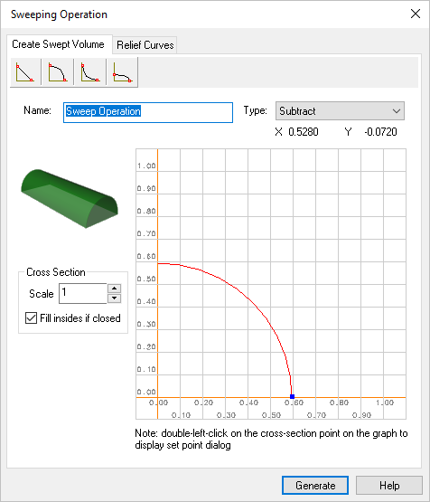 Dialog Box: Sweeping Operation, Create Swepted Volume tab |
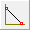This type outputs a triangular cross-section along the curve you have picked. This sweep generated is shown in the figure below. |
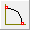This type outputs a convex cross-section along the curve you have picked. This sweep generated is shown in the figure below. 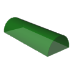 |
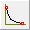This type outputs a concave arc cross-section along the curve you have picked. This sweep generated is shown in the figure below. 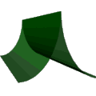 |
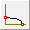This type outputs a concave elliptical cross-section along the curve you have picked. This sweep generated is shown in the figure below. |
By default the sweeping operation name is set to "Sweep Operation". This name can be changed for customization purposes if so desired by typing in a new name. |
Refer to Operation Type |
The Graph shown in the dialog can be used to modify the parameters of the cross-sections. This can be achieved by simply dragging the blue marker in the dialog with mouse. The co-ordinate system in the top right of the dialog shows the current location of the mouse in the window. Thus, by simply dragging the mouse over the dialog, The parameters can be changed. This is illustrated in the figure below. 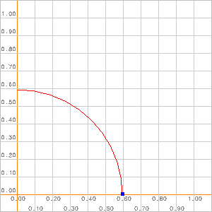 Create Swept Volume Graph By clicking on the blue control points and dragging the mouse over the screen, the properties of the cross-section can be changed. |
The scale of the graph can also be changed to suit your requirement. This can be achieved using the scale edit box present in the window. The default value of the scale is set to 0.1. By using the up and down arrow keys, the scale of the graph can be changed and will be reflected in the output graph. Specifying exact co-ordinates for the cross section, can be achieved by double clicking the mouse over the marker dot. This will bring up another dialog specifying the current position of the marker. This can now be modified and the changes will be reflected in the output. 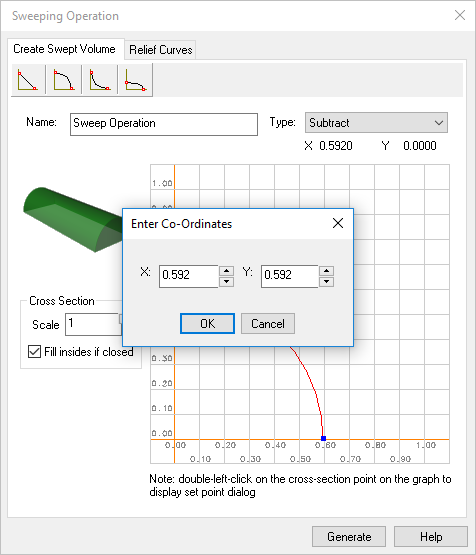 Dialog Box: Sweeping Operation, Enter Co-Ordinates |
This option is provided to user, if it is needed to close the interior of a specified closed curve. The sweep operation will be carried out as normal. However, if the curve is closed and you have specified this option, the interior of the curve will be raised to the maximum height of the cross-section. 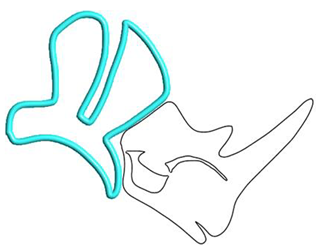 Volume Swept without "Fill Inside if Closed" option
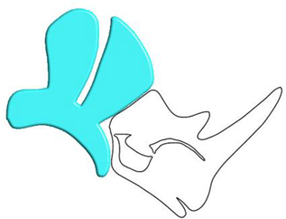 Volume Swept with "Fill Inside if Closed" option |